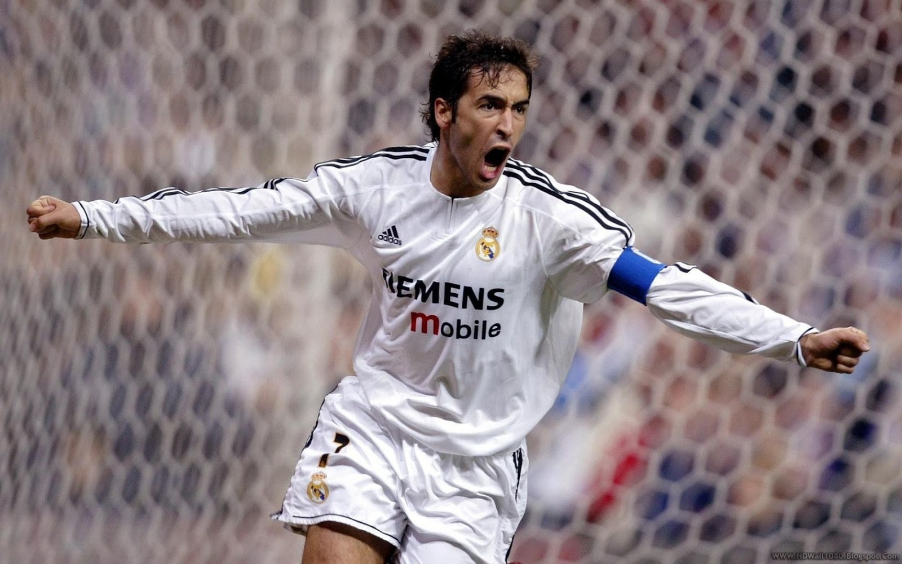

Top Scorers Page
Introduction
Real Madrid has a long rich history of top professional football players, where they scored many goals and made many appereances. In the tables below, I will show the top scorers and players with the most appearances for the club.
Players with the most appearances for the club

| Player Name |
Number of games |
| Raul |
741 |
| Iker Casillas |
725 |
| Manuel Sanchis |
710 |
| Sergio Ramos |
670 |
| Santillana |
645 |
| Fernando Hierro |
601 |
| Francisco Gento |
601 |
| Jose Camacho |
577 |
Top Real Madrid Scorers of All Time
| Player Name |
Number of Goals |
| Cristiano Ronaldo |
450 |
| Raul |
323 |
| Alfredo Di Stefano |
308 |
| Santiallana |
290 |
| Karim Benzema |
276 |
| Ferenc Puskas |
242 |
| Hugo Sanchez |
6208 |
| Pirri |
172 |